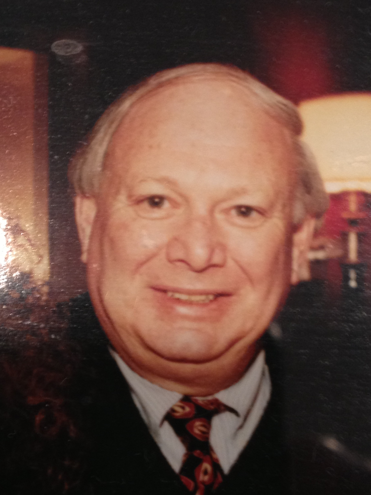

Attorneys

Andrew M. Ominsky
Andrew Ominsky has been practicing law since 1990, and is an experienced trial lawyer who has successfully represented clients in wrongful death, personal injury and civil rights actions. Andrew also has substantial expertise in real estate, banking, and insurance law. He was appointed to serve on the Pennsylvania Supreme Court Appellate Rules Committee in 1999.

Douglas Ominsky
Douglas Ominsky has been a practicing attorney since 1999. Douglas concentrates his practice in Pennsylvania and New Jersey, on general personal injury matters in federal and state courts. Douglas’ practice includes, but is not limited to, motor vehicle accidents, uninsured and underinsured cases, SEPTA accidents, premises liabilty, pedestrian accidents, and wrongful death cases.

Albert Ominsky, Retired, Of Counsel
Albert Ominsky founded the firm in 1962, and is an AV rated attorney with Martindale- Hubbell. Albert has a wide range of experience in nearly all facets of civil litigation and transactions, and has represented major corporate clients, banks, and individuals in a wide variety of legal matters.
Charles M. McCuen, Of Counsel
Charles McCuen has been with the firm since 1994, and has been an attorney since 1976. Charles has extensive experience in corporate law in drafting corporate and securities documentation, as well as experience in bankruptcy law with regards to Chapter 11 reorganizations and Chapter 7 liquidation proceedings. Charles has worked for top rated law firms in New York, Detroit, and Philadelphia.